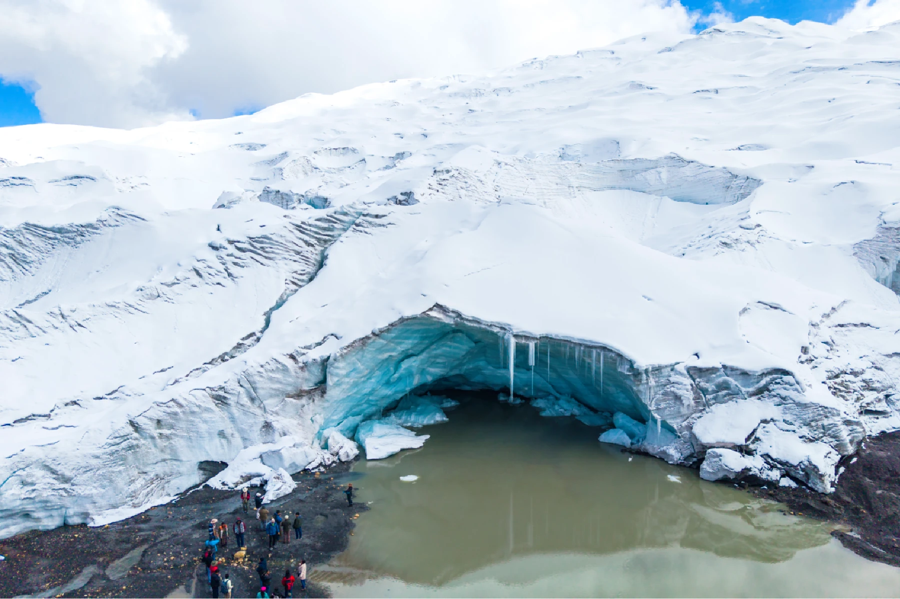
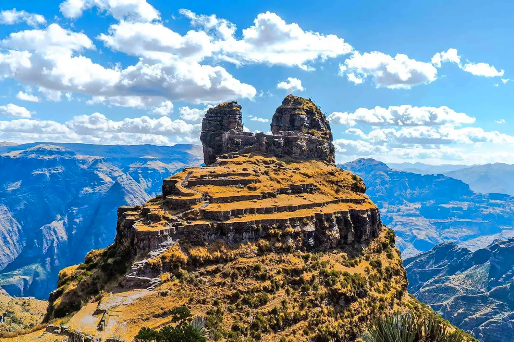

Nuestros Paquetes Turísticos

Machu Picchu Full Day
Vive la experiencia de conocer una de las 7 maravillas del mundo moderno. Explora la ciudadela inca más famosa del planeta con nuestros guías expertos.

City Tour Cusco
Recorre la ciudad imperial del Cusco y visita la impresionante fortaleza de Sacsayhuamán con sus enormes piedras perfectamente encajadas. Incluye Qorikancha, Catedral, Q'enqo, Puka Pukara y Tambomachay.

Valle Sagrado VIP
Explora Chinchero con una visita por Moray y las Salineras de Maras, para adentrarse al Valle Sagrado de los Incas con la impresionante fortaleza de Ollantaytambo, el complejo arqueológico de Pisac y un ejemplo perfecto de la arquitectura inca.

Valle Sur - Tipón
Descubre Tipón, el templo del agua inca con sus impresionantes sistemas hidráulicos que aún funcionan después de 500 años. Un sitio arqueológico único con andenes y fuentes de agua cristalina.

Montaña Vinicunca
Descubre la mágica Vinicunca, la montaña multicolor que te dejará sin aliento. Una experiencia única a 5,200 msnm en los Andes peruanos.

Laguna Humantay
Contempla las aguas turquesas de la laguna Humantay rodeada de imponentes nevados. Un paisaje de ensueño en el corazón de los Andes.

Glaciar de Quelccaya
Adéntrate en una expedición única hacia el glaciar tropical más grande del mundo. Paisajes glaciares, lagunas altoandinas y aventura extrema en los Andes peruanos.

Waqrapukara
Descubre la impresionante fortaleza en forma de cuerno de Waqrapukara, un sitio arqueológico poco conocido con vistas espectaculares al cañón del Apurímac.

Cuatrimotos ATV - Valle Sagrado
Vive la adrenalina de recorrer los paisajes más espectaculares del Valle Sagrado en cuatrimotos. Visita Maras, Moray y pueblos andinos con vistas panorámicas increíbles.